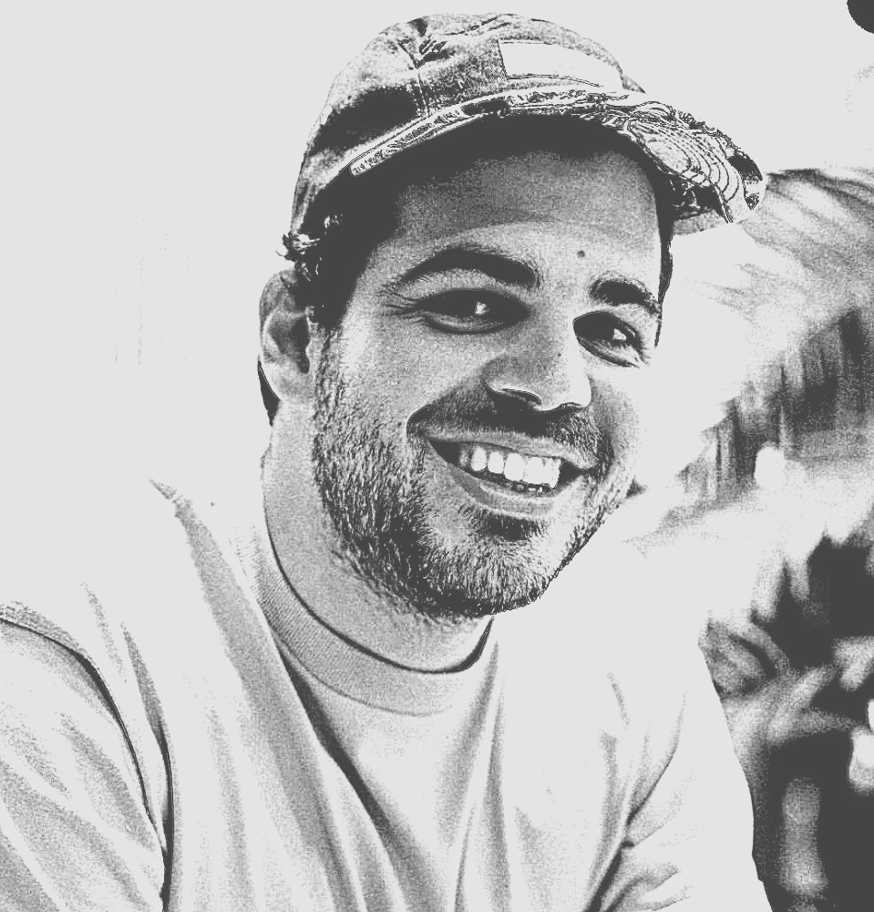

Los pulpos pierden por más de 100 puntos contra web. Las ratas atacan y los pulpos se van al mar
PULPOS
NEWS
MISTERIO
esta semana
¿CUÁL ES LA EDAD DE DIEGO?
Tras una larga investigación, después de calcular tiempos de estudio en su LinkedIn, Pia calcula entre 26 y 28 años. Diego se rehusa a hacer público este dato. ¿Será hoy el día en que lo diga?
Esto es lo más interesante que ha pasado en el bootcamp de UX/UI desde la ruleta de Nacho.
Conóce las últimas noticias de UX/UI Ironhack Madrid.
ÚLTIMAS
NOTICIAS

EL SOLTERO MÁS CODICIADO
VERChico del bootcamp UX/UI monta el toro mecánico como nunca. Sin camiseta gritan los expectadores y el chico complace al público. El soltero ha superado todas las expectativas todos los TA tienen sus bocas abiertas y Valentín tuvo su tercer infarto.
NUEVO Y MEJORADO
VERVíctor el nuevo TA temporal recibe el título de mejor TA por sus alumnos ya que ayer 23 de febrero se quedó resolviendo dudas 1 HORA MÁS. Diego por favor auméntale el sueldo al pobre todos firmaremos una petición.
BAJA LA TEMPERATURA
VEREl bootcamp de UX/UI decide hacerle una broma a la clase de Desarrollo Web, toda su comida mágicamente apareció en el congelador, Ups! tuppers congelados. Esto fue en respuesta a una broma muy tonta donde le escondieron el portátil a Queen Pia.
INSCRIBANSE PARA PERDER
VERHoy comienza el hackaton dónde podrás competir con todos los TA y con los ex-alumnos que ya trabajan y saben mucho más. Inscríbete para ganar 2000 euros 100% garantizado. 36 horas de pura diversión, duerme y has del número 2 en campus.

EL BOOTCAMP MÁS ABURRIDO
VERLos alumnos del boodcamp de Data se llevan el premio al bootcamp más aburrido, sólo han hecho una broma y fue patética, les falta sabor, tal vez ya son muchos porros. Todos esperan atentos a ver su necesaria participación en los equipos del hackaton lol.

MEJOR DE LO ESPERADO
VEREl nuevo Lead Diego esperaba que la clase de diseñadores colapsaran con el código, la realidad es que si que están sufriendo pero no lo demuestran, Juncal los hizo fuertes. Alumnos se quedaron hasta las 21h del jueves terminando sus proyectos.
MENCIONES
DE HONOR
La ilustradora
-
La parcerita
-
Anuel
-
Peor jugador de ping pong
-
Base 8
-
Speed talker
-
El ginete sin camisa
-
The british
-
El mazas
-
Dale una vueltita
-
Autolayout
-
El mejor TA Víctor
-
Abandona su trabajo de Lead Teacher
ATENCIÓN
SE BUSCA
DESAPARECIDO
El nuevo Lead Teacher desaparece en semana de código
Simón deja a sus bussines partners a cargo de la clase y por si no lo saben son los founders de Tailor